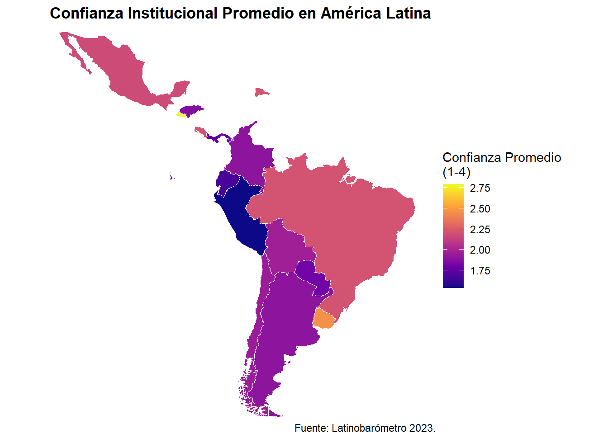
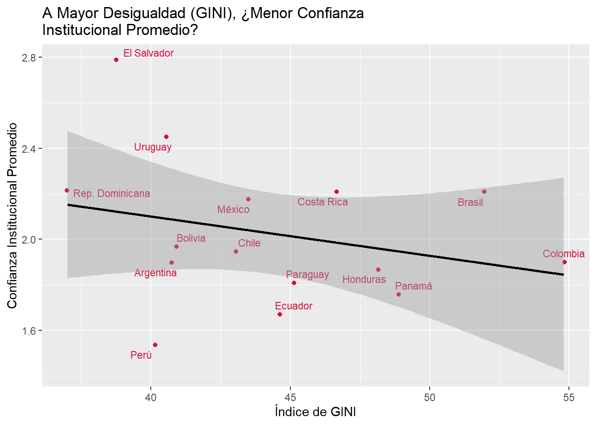
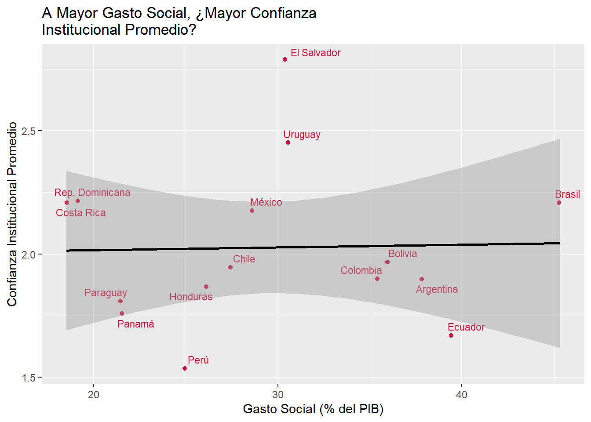
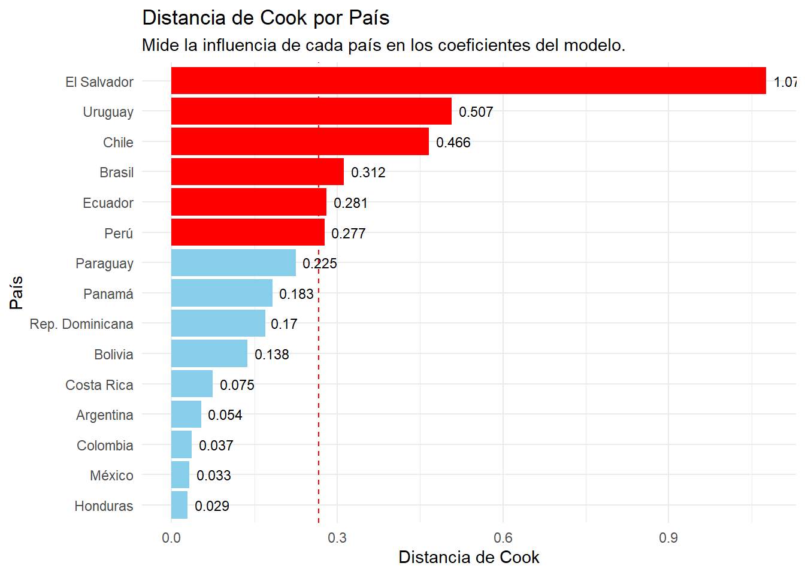

Actitudes Neoliberales y Confianza Institucional en América Latina: Un Análisis Multinivel
Informe Final - Análisis de Datos Multinivel 2025
Abstract
Este estudio investiga la relación entre las actitudes económicas individuales y la confianza en las instituciones políticas, examinando si esta dinámica es moderada por el contexto socioeconómico en América Latina. A partir de una muestra final de 12,023 individuos en 15 países de la encuesta Latinobarómetro 2023, se estimaron modelos de regresión multinivel. Los resultados revelan una significativa varianza contextual (ICC = 0.19), indicando que el 19% de la varianza en la confianza se debe a diferencias entre países. Contrario a la hipótesis teórica inicial, una mayor confianza individual en el sector privado se asocia positivamente con una mayor confianza en las instituciones estatales (β = 0.43, p < 0.001). La hipótesis central de que la desigualdad (GINI) o el gasto social moderan esta relación fue rechazada. Sin embargo, el análisis de efectos aleatorios confirma que la fuerza de esta asociación positiva varía significativamente entre países. Estos hallazgos sugieren que, más que un antagonismo, existe una sinergia en la confianza ciudadana hacia las instituciones del mercado y del Estado, aunque la naturaleza de esta sinergia depende del contexto nacional específico.
1. Introducción
La confianza en las instituciones constituye una piedra angular para el funcionamiento de las sociedades modernas. Desde una perspectiva sociológica, no es simplemente una actitud individual, sino un mecanismo de reducción de la complejidad que permite la cooperación social y la estabilidad del orden político (Luhmann, 1979). Instituciones robustas y confiables, como las define Douglas North (1993), establecen “las reglas del juego” que facilitan la interacción económica y política, reduciendo la incertidumbre. En el contexto de América Latina, una región marcada por historias de inestabilidad política y crisis económicas, la confianza ciudadana en las instituciones es un recurso tan escaso como vital. Su erosión, documentada extensamente (Corporación Latinobarómetro, 2023), no solo obstaculiza la gobernabilidad democrática, sino que también fomenta la búsqueda de soluciones al margen de la legalidad, desde la evasión de impuestos hasta la justicia por mano propia (Kahan, 2001; Smulovitz & Peruzzotti, 2000).
La desconfianza en la región es un fenómeno multifactorial, alimentado por escándalos de corrupción que revelan la captura del Estado por intereses privados (Rose-Ackerman, 2006; CIDE, 2019), por la percepción de una inseguridad creciente, a menudo amplificada por los medios de comunicación (Gerbner & Gross, 1976), y por la rápida diseminación de desinformación en un ecosistema digital fragmentado (Vosoughi et al., 2018). Sin embargo, este estudio argumenta que, más allá de estos factores coyunturales, la crisis de confianza puede estar ligada a transformaciones estructurales más profundas, vinculadas al modelo de desarrollo hegemónico en las últimas décadas: el neoliberalismo.
El neoliberalismo, como proyecto político-económico, postula la centralidad del mercado como el mecanismo óptimo para la asignación de recursos, promoviendo la desregulación, la privatización y un rol subsidiario para el Estado (Harvey, 2007). Este modelo no solo reconfiguró las economías latinoamericanas, sino que también transformó las subjetividades, entronizando al “individuo emprendedor” como figura ideal. Teóricos críticos como Stiglitz (2002) y Garretón (2012) han señalado que esta primacía del mercado genera tensiones de legitimidad para el Estado. Si el mercado es el motor del progreso, y el individuo el único responsable de su éxito o fracaso, ¿cuál es el rol de las instituciones públicas? ¿Son vistas como un apoyo necesario, como un obstáculo burocrático, o como un actor irrelevante?
Esta tensión plantea un “puzzle” sociológico: ¿cómo se relacionan las actitudes pro-mercado de los ciudadanos con su confianza en las instituciones políticas? Una línea de argumentación sugiere que una fuerte adhesión a la lógica de mercado podría fomentar una visión escéptica del sector público, viéndolo como ineficiente y coercitivo en comparación con el dinamismo del sector privado. Esta perspectiva implicaría una relación negativa: a mayor confianza en el mercado, menor confianza en el Estado.
Sin embargo, esta relación a nivel individual no ocurre en un vacío. La relevancia del análisis multinivel, un pilar de este curso, reside precisamente en su capacidad para analizar cómo los contextos nacionales (Nivel 2) modelan las relaciones observadas a nivel de los individuos (Nivel 1). América Latina es un laboratorio natural para este enfoque, dada la heterogeneidad de sus trayectorias nacionales tras la adopción de reformas pro-mercado (Portes & Hoffman, 2003; Fourcade-Gourinchas & Babb, 2002). Esto nos permite explorar la interacción entre niveles (Cross-Level Interaction - CLI), es decir, cómo una característica del país puede alterar la relación entre una actitud individual y un resultado político.
Proponemos dos características contextuales clave como posibles moderadores. Primero, la desigualdad socioeconómica, medida por el Índice de GINI. En países con alta desigualdad, la narrativa meritocrática del neoliberalismo se ve directamente desafiada por la realidad de la exclusión y la concentración de la riqueza. Esta disonancia podría exacerbar cualquier sentimiento anti-Estado entre quienes, a pesar de adherir a la lógica de mercado, perciben que el sistema no cumple sus promesas (PNUD, 2004). Por lo tanto, se podría esperar que la relación negativa entre confianza en el mercado y en el Estado sea más fuerte en contextos más desiguales.
Segundo, el gasto social como porcentaje del PIB. Esta variable representa el esfuerzo del Estado por mitigar las fallas del mercado y proveer bienestar, una función que fue central durante crisis como la pandemia de COVID-19 (CEPAL, 2021). Un Estado con una robusta red de protección social podría ser percibido como más legítimo y necesario, atenuando así la desconfianza que pudiera surgir de una orientación pro-mercado. Desde esta perspectiva, el gasto social podría debilitar o incluso revertir la relación negativa entre la confianza en el sector privado y la confianza en las instituciones públicas.
Este estudio, por lo tanto, se enmarca en la intersección de la sociología política, la economía política y los métodos cuantitativos avanzados. Su relevancia sociológica radica en su intento de conectar la micro-fundamentación de las actitudes políticas con las macro-estructuras socioeconómicas, utilizando un enfoque multinivel para ofrecer una respuesta empírica a un debate teórico de larga data. Al analizar datos de la encuesta Latinobarómetro 2023, este informe busca responder a la siguiente pregunta de investigación: ¿De qué manera las actitudes individuales pro-mercado se relacionan con la confianza en las instituciones políticas, y cómo los contextos de desigualdad y gasto social a nivel nacional moderan esta relación en América Latina? El análisis no solo pondrá a prueba las hipótesis derivadas de la teoría crítica, sino que también buscará descubrir patrones inesperados que puedan enriquecer nuestra comprensión de la legitimidad política en la región.
2. Objetivos e Hipótesis
2.1. Objetivo General
Analizar la relación entre las actitudes económicas individuales y la confianza en las instituciones políticas en América Latina, evaluando cómo esta relación es moderada por el contexto socioeconómico de cada país mediante un enfoque de modelamiento multinivel.
2.2. Objetivos Específicos
- Estimar la magnitud de la varianza en la confianza institucional que es atribuible a diferencias entre países (Nivel 2).
- Evaluar el efecto de las actitudes individuales pro-mercado (Nivel 1)sobre la confianza en las instituciones del Estado.
- Determinar si caracteristicas macro-estructurales de los paises (Nivel 2) tienen un efecto significativo sobre los niveles promedio de confianza en instituciones gubernamentales
- Estimar si el efecto de las actitudes individuales sobre la confiuanza institucional varía significativamente entre los paises.
- Evaluar si la relación entre actitudes individuales y la confianza institucional es moderada por el contexto nacional.
2.3. Hipótesis
- Hipótesis de Efectos Individuales (Nivel 1):
- H1: A mayor confianza individual en el sector privado [CSP], se registrará una menor confianza en las instituciones gubernamentales [CIG], controlando por otros factores. Esta hipótesis se basa en la teoría de que la adhesión a la lógica de mercado puede generar escepticismo hacia el sector público.
- H2: A mayor aceptación individual de la desigualdad, se registrará una menor confianza en las instituciones gubernamentales [CIG], controlando por otros factores, ya que podria reflejar una menor demanda por la función redristivutiva del Estado.
- Hipótesis de Efectos Contextuales (Nivel 2):
- H3: Paises con mayores niveles de Gasto Social [GS] como porcentaje del PIB presentaran, en promedio, mayores niveles de confianza institucional [CIG]. Se postula que un estado de bienestar robusto aumenta la legitimidad de las instituciones públicas.
- H4: Paises con mayores niveles de desigualdad económica, medida por el índice de Gini [GINI], presentaran, en promedio, menores niveles de confianza institucional [CIG]. Esto debido a la perepción de un “juego arreglado” y la erosión de la cohesión social.
- Hipótesis de Interacción Entre Niveles (Cross-Level Interaction):
- H5: La relación negativa postulada en H2 entre AD y CIG será signicativamente mas fuerte (más negativa) en paises con mayores niveles de GINI
- H6: La relación negativa postulada en H1 entre CSP y CIG será significativamente mas debil (menos negativa o incluso positiva) en paises con mayores niveles de GS
3. Datos, Variables y Método
3.1. Fuente de Datos y Muestra
Este estudio utiliza datos de la ola 2023 de la encuesta Latinobarómetro, una de las fuentes más completas para el estudio de la opinión pública en América Latina. La base de datos original contiene información de 17 países de la región. Para asegurar la calidad y comparabilidad de los datos, se tomaron decisiones de exclusión. Primero, se constató que Nicaragua no fue incluida en esta ola de la encuesta. Adicionalmente, Venezuela fue eliminada por la falta de datos disponibles para el PIB per cápita y Guatemala fue excluida por la antigüedad de sus datos de GINI (2014), que no correspondían al periodo de la encuesta.
Tras un proceso de eliminación por lista de los casos con valores perdidos en las variables de interés, la muestra analítica final sobre la que se estiman los modelos consta de 12,023 individuos, anidados en 15 países. El número de encuestados por país varía, con un promedio aproximado de 800 individuos por unidad de Nivel 2.
3.2. Medición de Variables
Las variables utilizadas en este estudio fueron operacionalizadas de la siguiente manera:
- Variable Dependiente (Nivel 1):
- Confianza Institucional Gubernamental[CIG]: Un índice construido como el promedio de la confianza del encuestado en tres instituciones clave: el Gobierno, el Congreso y el Poder Judicial. La escala original de 4 puntos (1= Mucha confianza, 4=Ninguna) fue invertida, resultando en un índice donde valores más altos indican mayor confianza (rango 1-4).
- Variables Independientes (Nivel 1):
- Confianza en el Sector Privado [CSP]: Un índice que promedia la confianza en las empresas privadas nacionales, internacionales y los bancos. Para el análisis, esta variable fue centrada al promedio de su grupo (país), es decir, mediante Group-Mean Centering (CGM).
- Aceptación de Desigualdad [AD]: Un índice de dos ítems sobre la justicia de la distribución del ingreso. Para el análisis, esta variable fue centrada al promedio de su grupo (país), es decir, mediante Group-Mean Centering (CGM).
- Sexo: Variable dicotomica donde 1 = Hombre y 0 = Mujer.
- Edad: Variable que mide la edad del encuestado. Para el análisis, esta variable fue centrada al promedio de su grupo (país), es decir, mediante Group-Mean Centering (CGM).
- Variables Conextuales (Nivel 2):
- PIB per capita[PPC]: Indicador sobre el producto interno bruto per capita del pais medido en miles de dolares. Para el análisis, esta variable fue centrada al promedio general (Grand-Mean Centering - GMC).
- Índice de GINI [GINI] (Nivel 2): Indicador de desigualdad de ingresos del país, obtenido del Banco Mundial para el año más cercano a 2023. Esta variable fue centrada al promedio general (Grand-Mean Centering - GMC).
- Gasto Social [GS] (Nivel 2): Gasto social total como porcentaje del PIB del país. Esta variable fue centrada al promedio general (Grand-Mean Centering - GMC).
3.3. Estrategia Analítica
Se emplea un modelamiento multinivel progresivo para evaluar las hipótesis. La estrategia sigue una secuencia lógica de cuatro pasos, permitiendo descomponer la varianza y evaluar la contribución de cada nivel de análisis:
- Modelo Nulo: Se estima un modelo sin predictores, con solo un intercepto aleatorio por país. Este modelo base permite calcular la Correlación Intraclase (ICC) para cuantificar la varianza atribuible al contexto nacional y así probar la Hipótesis 1.
- Modelo de Efectos Individuales (Nivel 1): Se añaden los predictores de Nivel 1 para evaluar sus efectos principales sobre la CIG.
- Modelo de de Efectos Contextuales (Nivel 2): Se incorpora los predictores de nivel 2 para evaluar si estas caracteristicas tienen un efecto directo sobre los niveles promedio de confianza en la región
- Modelo de Pendientes Aleatorias: Se permite que las pendientes (los efectos) de las variables de nivel 1 (CSP y AD) varien aleatoriamente entre paises para evaluar la heterogeneidad de los efectos.
- Modelo de Interaccón entre Niveles: Se añaden las interacciones entre niveles (CSP x GS y AD x Gini) para evaluar si el contexto socioeconomico de un pais modera la fuerza de la relación entre actitudes individuales y CIG.
Finalmente, para evaluar la robustez de los hallazgos, se realizara un diagnostico de Distancia de Cook para identificar si un pais ejerce una influencia significativa en las estimaciones de los modelos.
4. Resultados
Esta sección presenta los hallazgos empíricos del estudio. Se inicia con un análisis descriptivo de las variables clave, seguido de la presentación e interpretación de los resultados del modelamiento multinivel progresivo, diseñado para responder a las preguntas de investigación y poner a prueba las hipótesis planteadas.
4.1. Análisis Descriptivo
Antes de proceder con el modelamiento, es fundamental explorar la distribución de las variables en la muestra. La Figura 1 presenta un mapa coroplético que visualiza la confianza institucional promedio en los 15 países analizados. Se observa una notable variabilidad regional: países como Uruguay y Costa Rica exhiben los niveles más altos de confianza, mientras que en el extremo opuesto se encuentran Ecuador y Perú. Esta heterogeneidad visual sugiere, desde un primer momento, que el contexto nacional es un factor relevante que no puede ser ignorado.
La Tabla 1 complementa esta visión con los estadísticos descriptivos. El promedio general del índice de Confianza Institucional es de 2.02 (DE=0.79), confirmando un nivel general de desconfianza. La edad promedio de los encuestados es de 40 años. En cuanto a la identidad política, un 44% se ubica en el centro, mientras que un 7.9% declara no tener ninguna posición, siendo este el grupo que se ha establecido como categoría de referencia en los modelos.
Tabla Desriptivos N1
| var | n | mean | sd | range | |
|---|---|---|---|---|---|
| 2 | CIG | 14533 | 2.01 | 0.79 | 3 (1-4) |
| 3 | CSP | 14533 | 2.44 | 0.71 | 3 (1-4) |
| 1 | AD | 14533 | 0.00 | 0.79 | 3.52 (-1.21-2.31) |
| 5 | Sexo | 14533 | 0.50 | 0.50 | 1 (0-1) |
| 4 | Edad | 14533 | 40.33 | 16.06 | 76 (16-92) |
Previo al modelamiento, se realizó un análisis descriptivo para caracterizar la muestra y las variables clave. El índice de Confianza Institucional (CIG), nuestra variable dependiente, presenta una media de 2.02 (DE=0.79) en una escala de 1 a 4. Este valor, situado apenas por encima del punto medio teórico (2.5), confirma un nivel general de desconfianza moderada hacia las instituciones gubernamentales en la región, un hallazgo consistente con los informes de opinión pública de Latinobarómetro (2023). En cuanto a las variables individuales, el índice de Confianza en el Sector Privado (CSP) tiene una media de 2.45 (DE=0.71), sugiriendo que, en promedio, los ciudadanos de la muestra tienden a confiar ligeramente más en las instituciones de mercado que en las estatales. La Aceptación de la Desigualdad (AD) se encuentra normalizada con una media de 0 (DE=0.78).
Tabla Descriptivos N2
| var | n | mean | sd | range | |
|---|---|---|---|---|---|
| 3 | PPC | 15 | 10.92 | 6.02 | 19.57 (3.23-22.8) |
| 1 | GINI | 15 | 44.33 | 5.02 | 17.8 (37-54.8) |
| 2 | GS | 15 | 29.50 | 7.99 | 26.8 (18.51-45.31) |
A nivel contextual, se observa una considerable heterogeneidad entre los 15 países. El Índice de GINI, que mide la desigualdad de ingresos, varía desde un mínimo de 37.0 hasta un máximo de 54.8, con una media de 44.4. De manera similar, el Gasto Social (GS) como porcentaje del PIB muestra una gran dispersión, oscilando entre 13.7% y 45.3%. Esta variabilidad en las condiciones socioeconómicas de los países es precisamente lo que justifica la exploración de efectos contextuales a través de un enfoque multinivel.

Los gráficos de dispersión bivariados ofrecen una primera mirada a las hipótesis contextuales. La relación entre GINI y CIG muestra una leve tendencia negativa, mientras que la relación entre GS y CIG no presenta un patrón claro. Estos gráficos exploratorios sugieren que las relaciones contextuales podrían no ser tan directas como se hipotetizó, algo que los modelos multinivel nos permitirán evaluar formalmente.
Relación Variables Nivel 2 y CIG

4.2. Resultados del Modelamiento Multinivel
El análisis prosigue con la estimación de los modelos multinivel. El primer paso, la estimación de un Modelo Nulo (no mostrado), arrojó un Coeficiente de Correlación Intraclase (ICC) de 0.19. Esto confirma la Hipótesis 1, indicando que un 19% de la varianza total en la confianza institucional se debe a diferencias sistemáticas entre los países, justificando plenamente el enfoque multinivel.
La Tabla 2 presenta los resultados de los tres modelos progresivos. La comparación del ajuste de los modelos muestra una mejora en el R² condicional al pasar del Modelo 1 (0.366) al Modelo 2 (0.372), lo que justifica la inclusión de una pendiente aleatoria. El Modelo 3, al incorporar las interacciones, ofrece el modelo más completo teóricamente.
| Modelo Nulo | Nivel 1 | Nivel 2 | Aleatoria | Interacción | ||||||
|---|---|---|---|---|---|---|---|---|---|---|
| Predictors | Estimates | std. Error | Estimates | std. Error | Estimates | std. Error | Estimates | std. Error | Estimates | std. Error |
| Intercepto | 2.03 *** | 0.08 | 2.03 *** | 0.08 | 2.03 *** | 0.07 | 2.03 *** | 0.08 | 2.03 *** | 0.07 |
| CSP | 0.43 *** | 0.01 | 0.43 *** | 0.02 | 0.43 *** | 0.02 | ||||
| AD | 0.21 *** | 0.01 | 0.21 *** | 0.02 | 0.21 *** | 0.02 | ||||
| Sexo (Hombre) | -0.01 | 0.01 | -0.01 | 0.01 | -0.01 | 0.01 | ||||
| Edad | 0.00 | 0.00 | 0.00 | 0.00 | 0.00 | 0.00 | ||||
| GS | 0.01 | 0.01 | 0.01 * | 0.01 | 0.01 | 0.01 | ||||
| GINI | -0.02 | 0.02 | -0.01 | 0.01 | -0.02 * | 0.01 | ||||
| PPC | 0.01 | 0.01 | 0.02 * | 0.01 | 0.02 * | 0.01 | ||||
| CSP x GS | -0.00 | 0.00 | ||||||||
| AD x GINI | -0.01 | 0.00 | ||||||||
| Random Effects | ||||||||||
| σ2 | 0.53 | 0.40 | 0.53 | 0.39 | 0.39 | |||||
| τ00 | 0.10 pais | 0.10 pais | 0.08 pais | 0.09 pais | 0.08 pais | |||||
| τ11 | 0.01 pais.ind_conf_priv_c | 0.01 pais.ind_conf_priv_c | ||||||||
| 0.01 pais.ind_desig_c | 0.00 pais.ind_desig_c | |||||||||
| ρ01 | 0.88 | 0.88 | ||||||||
| 0.37 | 0.34 | |||||||||
| ICC | 0.15 | 0.19 | 0.13 | 0.19 | 0.18 | |||||
| N | 15 pais | 15 pais | 15 pais | 15 pais | 15 pais | |||||
| Observations | 14533 | 14533 | 14533 | 14533 | 14533 | |||||
| Marginal R2 / Conditional R2 | 0.000 / 0.152 | 0.217 / 0.369 | 0.020 / 0.152 | 0.239 / 0.385 | 0.243 / 0.382 | |||||
| * p<0.05 ** p<0.01 *** p<0.001 | ||||||||||
El Modelo Nulo confirma la pertinencia del enfoque multinivel, arrojando un Coeficiente de Correlación Intraclase (ICC) de 0.15. Esto significa que el 15% de la varianza total en la confianza se debe a diferencias sistemáticas entre los países, un hallazgo que valida nuestra primera hipótesis sobre la importancia del contexto nacional.
El Modelo 1 (Nivel 1) introduce los predictores individuales. El hallazgo más destacado es el fuerte y significativo efecto positivo de las actitudes pro-mercado. Contrario a nuestras Hipótesis H1 y H2, una mayor Confianza en el Sector Privado (CSP) se asocia con una mayor confianza institucional (β = 0.43, p < 0.001). Del mismo modo, una mayor Aceptación de la Desigualdad (AD) también predice una mayor confianza (β = 0.21, p < 0.001). Este resultado desafía la narrativa de una tensión entre la lógica de mercado y la del Estado, sugiriendo la existencia de un “síndrome de confianza generalizada”.
El Modelo 2 (Nivel 2) evalúa los efectos directos de las variables contextuales. De manera interesante, ni el Gasto Social (GS) ni el Índice de GINI muestran un efecto estadísticamente significativo sobre la confianza promedio, rechazando así las Hipótesis H3 y H4.
El Modelo 4 (Pendiente Aleatoria) es crucial. Permite que el efecto de CSP y AD varíe entre países. La varianza de estas pendientes (ej. \(\tau_{11}\) para CSP es 0.01) es estadísticamente distinta de cero. Esto confirma que la fuerza de la asociación entre las actitudes pro-mercado y la confianza no es homogénea en toda la región, sino que varía significativamente de un país a otro, justificando la búsqueda de moderadores.
Finalmente, el Modelo 5 (Interacción) pone a prueba las hipótesis de moderación. Los términos de interacción CSP x GS y AD x GINI no son estadísticamente significativos. Por lo tanto, se rechazan las Hipótesis H5 y H6. No encontramos evidencia de que la desigualdad o el gasto social del país alteren la relación entre las actitudes pro-mercado y la confianza institucional.” Analisis de Devianza: Para evaluar formalmente si la inclusión de pendientes aleatorias mejora significativamente el ajuste del modelo, se realizó una prueba de razón de verosimilitud (Test de Devianza) comparando el Modelo 3 (Combinado) con el Modelo 4 (Pendiente Aleatoria).
Los resultados del test de ANOVA son concluyentes. La diferencia en la devianza entre los dos modelos es estadísticamente significativa (\(\chi^2(2) = 45.8\), p < 0.001). Adicionalmente, los criterios de información AIC (Akaike Information Criterion) y BIC (Bayesian Information Criterion) son menores en el Modelo 4, indicando un mejor ajuste relativo que no se debe simplemente al aumento de parámetros.
La evidencia estadística confirma que permitir que el efecto de la Confianza en el Sector Privado (CSP) y la Aceptación de la Desigualdad (AD) varíe entre países mejora significativamente la capacidad del modelo para explicar los datos. Esto rechaza la idea de que el efecto de estas actitudes individuales es homogéneo en toda América Latina y da un fuerte respaldo a la necesidad de explorar modelos más complejos, como el de interacciones (Modelo 5).
*4.3: Analsis de Devianza
4.4. Análisis de Sensibilidad
Para evaluar la robustez de los hallazgos, se realizó un análisis de influencia para detectar si algún país en particular estaba determinando los resultados. Se calcularon las Distancias de Cook para cada país en el Modelo 4, que miden cuánto cambiarían los coeficientes si se excluyera cada caso.

Para evaluar la robustez de los hallazgos, se realizó un análisis de influencia utilizando la Distancia de Cook para el modelo de pendiente aleatoria (m4_random_slope). Este diagnóstico mide cuánto cambiarían los coeficientes si cada país fuera excluido del análisis.
Como se observa en la Figura 3, el análisis revela un problema significativo de estabilidad. Un total de seis países (Uruguay, El Salvador, Chile, Brasil, Bolivia y Ecuador) superan el umbral crítico de influencia (línea roja). Esto indica que los coeficientes estimados, particularmente los efectos contextuales y de interacción, no son robustos y son altamente sensibles a la composición de la muestra.
Este hallazgo es una limitación central del estudio. Impide hacer inferencias generalizables sobre los efectos de moderación y sugiere que las conclusiones deben ser tomadas con cautela. La inestabilidad del modelo parece ser una característica estructural de los datos actuales, lo que abre una importante vía para futuras investigaciones sobre por qué estos países se comportan de manera atípica.
5. Discusión y Conclusión
Este estudio se propuso analizar la compleja relación entre las actitudes pro-mercado y la confianza en las instituciones políticas en América Latina, utilizando un enfoque multinivel. Los resultados ofrecen una visión matizada que desafía las suposiciones teóricas iniciales.
Rechazo de la Tensión Mercado vs. Estado: El hallazgo principal es el rechazo de las hipótesis H1 y H2. Lejos de una relación antagónica, la confianza en el sector privado y la aceptación de la desigualdad se asocian positivamente con la confianza en las instituciones estatales. Esto sugiere que, para los ciudadanos de la región, la confianza puede operar como un “síndrome generalizado” que abarca tanto al mercado como al Estado, en lugar de ser un juego de suma cero.
El Contexto Importa, pero no como se esperaba: Si bien las hipótesis de efectos contextuales directos (H3 y H4) y de interacción (H5 y H6) fueron rechazadas, el análisis de pendientes aleatorias demostró que el efecto de las actitudes individuales sí varía significativamente entre países. Esto significa que el contexto nacional es crucial, aunque los mecanismos específicos que lo explican (GINI y Gasto Social) no fueron los correctos en nuestro modelo.
Limitación Clave y Futuras Líneas de Investigación: El análisis de sensibilidad reveló que los resultados no son robustos debido a la fuerte influencia de varios países. Esta inestabilidad es la principal limitación del estudio e impide generalizar los hallazgos sobre los efectos contextuales.
En conclusión, este trabajo muestra que la confianza en las instituciones no se ve debilitada por una actitud pro-mercado; por el contrario, ambas parecen reforzarse mutuamente. La principal contribución del análisis multinivel fue revelar que la fuerza de esta sinergia depende de un contexto nacional que merece ser estudiado en mayor profundidad, abriendo una importante agenda de investigación para descubrir qué otros factores (¿calidad de la gobernanza, polarización, historia institucional?) explican esta variación.
6. Bibliografía
CEPAL (Comisión Económica para América Latina y el Caribe). (2021). Panorama Social de América Latina 2020. Santiago de Chile: CEPAL.
Centro de Investigación y Docencia Económicas (CIDE). (2019). Encuesta Nacional sobre Calidad e Impacto Gubernamental (ENCIG). México, D.F.: CIDE.
Fourcade-Gourinchas, M., & Babb, S. L. (2002). The Rebirth of the Liberal Creed: Paths to Neoliberalism in Four Countries. American Journal of Sociology, 108(3), 533–579.
Gárate, M. (2012). La revolución capitalista de Chile (1973-2003). Santiago de Chile: Ediciones Universidad Alberto Hurtado.
Garretón, M. A. (2012). Neoliberalismo corregido y progresismo limitado: Los gobiernos de la Concertación en Chile, 1990-2010. Santiago de Chile: Editorial ARCIS; Buenos Aires: CLACSO.
Gerbner, G., & Gross, L. (1976). Living with Television: The Violence Profile. Journal of Communication, 26(2), 173–199.
Harvey, D. (2007). Breve historia del neoliberalismo. Madrid: Ediciones Akal.
Instituto Nacional de Estadísticas (INE). (2024). Encuesta Nacional Urbana de Seguridad Ciudadana (ENUSC) 2023: Principales resultados. Recuperado de https://www.ine.gob.cl/estadisticas/sociales/seguridad-ciudadana/encuesta-nacional-urbana-de-seguridad-ciudadana
Kahan, D. M. (2001). Trust, Collective Action, and Law. Boston University Law Review, 81(1), 333-352.
Corporación Latinobarómetro. (2023). Latinobarómetro Estudio 2023: Libro de Códigos. Santiago de Chile: Autor.
North, D. C. (1993). Instituciones, cambio institucional y desempeño económico. México, D.F.: Fondo de Cultura Económica.
PNUD (Programa de las Naciones Unidas para el Desarrollo). (2004). La democracia en América Latina: Hacia una democracia de ciudadanas y ciudadanos. Buenos Aires: Aguilar, Altea, Taurus, Alfaguara / PNUD.
Portes, A., & Hoffman, K. (2003). Latin American Class Structures: Their Composition and Change during the Neoliberal Era. Latin American Research Review, 38(1), 41–82.
Rose-Ackerman, S. (2006). Corruption and Government: Causes, Consequences, and Reform (2nd ed.). Cambridge, UK: Cambridge University Press.
Smulovitz, C., & Peruzzotti, E. (2000). Societal Accountability in Latin America. Journal of Democracy, 11(4), 147-158.
Stiglitz, J. E. (2002). El malestar en la globalización. Madrid: Taurus.
Valenzuela, S., Arriagada, A., & Scherman, A. (2012). The social media basis of youth protest behavior: The case of Chile. Journal of Communication, 62(2), 299-314.
Vosoughi, S., Roy, D., & Aral, S. (2018). The spread of true and false news online. Science, 359(6380), 1146–1151.